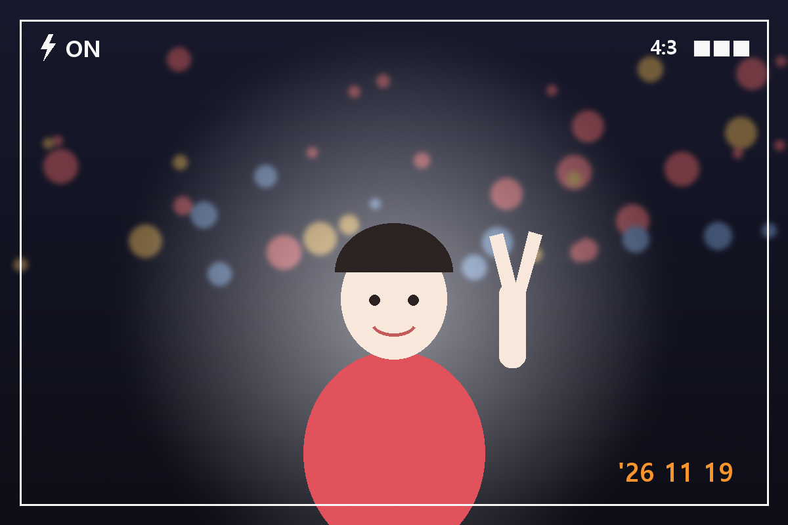
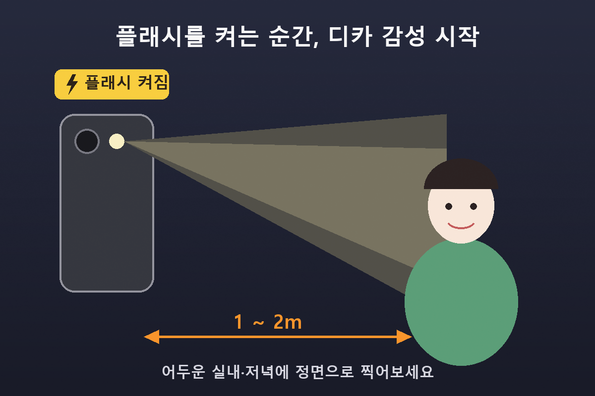
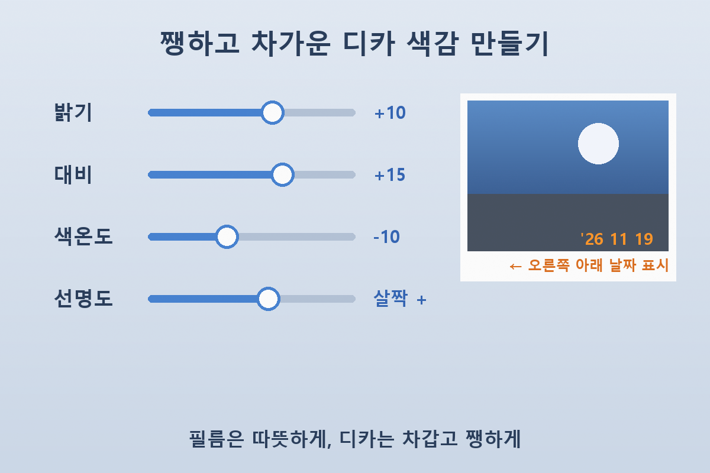
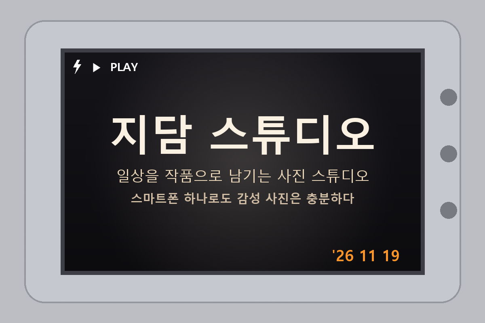

디카 감성 사진, 스마트폰으로 똑같이 찍는 법 3가지 (플래시·스냅·색감)

요즘 친구들과 모이면 가방에서 작은 디지털카메라를 꺼내는 모습, 한 번쯤 보셨죠? 2000년대에 쓰던 콤팩트 디카가 다시 유행하면서 중고 시장에서는 몇 년 전보다 훨씬 비싼 값에 거래되기도 한다고 해요. 플래시가 '팍' 터진 선명한 얼굴, 살짝 차갑고 쨍한 색감, 일부러 흔들린 듯한 자연스러운 스냅까지. 화질이 완벽하지 않은데도 묘하게 그때 그 시절 같은 분위기가 매력이죠. 그런데 "디카 감성 사진을 찍으려면 꼭 옛날 카메라를 구해야 할까?" 고민되셨다면 걱정하지 마세요. 디카 사진의 매력을 만드는 건 결국 플래시, 즉흥적인 순간, 그리고 특유의 색감이에요. 이 세 가지는 지금 쓰는 스마트폰으로도 충분히 따라 할 수 있답니다.
1. 플래시를 켜는 순간, 디카 감성이 시작된다

디카 사진의 상징은 뭐니 뭐니 해도 정면에서 터지는 플래시예요. 스마트폰 카메라는 보통 플래시가 '자동'으로 되어 있어서 밝은 곳에서는 잘 터지지 않는데요, 카메라 화면 위쪽의 번개 모양 아이콘을 눌러 '켜짐'으로 바꿔 주세요. 플래시가 가장 예쁘게 나오는 때는 해가 진 저녁이나 조명이 어두운 실내예요. 배경은 어둡게 가라앉고 인물만 또렷하게 떠오르면서 그 시절 디카 특유의 분위기가 살아납니다. 피사체와의 거리는 1~2m 정도가 적당해요. 너무 가까우면 얼굴이 하얗게 날아가고, 너무 멀면 플래시가 닿지 않거든요. 낮에 찍고 싶다면 그늘진 곳에서 플래시를 켜 보세요. 역광으로 어두워진 얼굴이 밝게 살아나면서 쨍하고 선명한 디카 느낌이 납니다. 유리창이나 거울을 정면으로 찍으면 빛이 반사되니 살짝 비스듬히 서는 것도 잊지 마세요.
2. 완벽한 구도보다 '그 순간'을 찍는 스냅 촬영
디카 사진이 편안하고 자연스러워 보이는 이유는 '잘 찍으려고' 하지 않았기 때문이에요. 포즈를 잡고 여러 번 다시 찍기보다, 친구가 웃는 순간이나 걸어가는 뒷모습을 바로 찍어 보세요. 스마트폰 셔터 버튼을 길게 누르거나 아래로 밀면 연속 촬영이 되는데, 그중 표정이 가장 자연스러운 한 장을 고르면 실패가 없어요. 화면 비율은 16:9 대신 4:3으로 바꿔 주세요. 옛날 디카 대부분이 4:3 비율이라 그것만으로도 분위기가 꽤 달라집니다. 일부러 수평을 살짝 기울이거나 인물을 화면 가장자리에 두는 것도 좋아요. 어두운 곳에서 손이 조금 흔들려 생긴 빛 번짐도 실수가 아니라 디카 감성의 일부랍니다. 단, 줌은 최대한 쓰지 말고 직접 다가가서 찍어야 화질이 깨지지 않아요. 하루에 딱 20장만 찍겠다고 정해 두면 한 장 한 장 더 신중해지고 재미도 커져요.
3. 쨍하고 차가운 디카 색감 만들기

필름 감성이 따뜻하고 바랜 느낌이라면, 디카 감성은 반대로 살짝 차갑고 쨍한 색이 특징이에요. 스마트폰 기본 편집 기능에서 이렇게 조절해 보세요. 먼저 밝기를 +10 정도 올려 플래시를 맞은 듯 화사하게 만듭니다. 다음으로 대비를 +15 안팎으로 올리면 어두운 배경과 밝은 인물이 또렷하게 분리돼요. 색온도(따뜻함)는 -10 정도로 내려 푸르스름한 톤을 더해 주고, 선명도를 살짝 올리면 디지털 특유의 또렷한 질감이 생깁니다. 마지막 포인트는 사진 오른쪽 아래의 주황색 날짜 표시예요. 사진 편집 앱의 텍스트 기능으로 '26 11 19'처럼 숫자를 넣고 주황색으로 바꾸면 그 시절 디카로 찍은 듯한 완성도가 확 올라가요. 마음에 드는 값은 꼭 기록해 두었다가 다른 사진에도 똑같이 적용해 보세요. 색감이 통일되면 피드 전체가 하나의 앨범처럼 보입니다.

오늘 소개한 방법을 정리해 볼게요. 어두운 곳에서 플래시를 켜 정면으로 찍고, 4:3 비율과 연속 촬영으로 꾸밈없는 순간을 담고, 밝기와 대비는 올리고 색온도는 내려 쨍한 디카 색감에 날짜 표시로 마무리하기. 이 세 가지면 중고 디카를 찾아다니지 않아도 그 시절 감성을 충분히 낼 수 있어요. 결국 중요한 건 장비가 아니라 순간을 놓치지 않는 마음이니까요. 다시 한번 말씀드리지만, 스마트폰 하나로도 감성 사진은 충분하다는 것, 꼭 기억해 주세요. 저희 지담 스튜디오도 매일의 평범한 장면을 작품처럼 남기는 일을 가장 좋아한답니다. 이번 주에 스마트폰으로 찍은 나만의 디카 감성 사진이 있다면 댓글로 자랑해 주세요. 하나하나 꼼꼼히 보고 답글 남겨 드릴게요. 다음 촬영 팁도 받아보고 싶다면 이웃추가 부탁드려요!